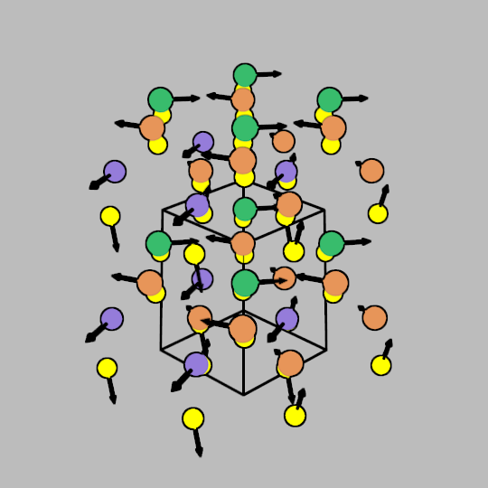
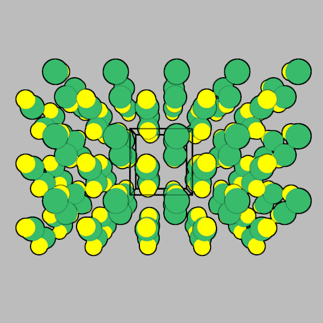
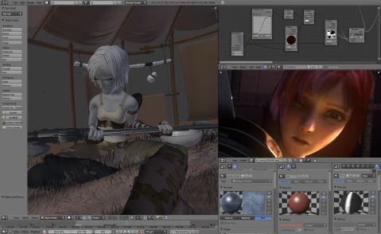
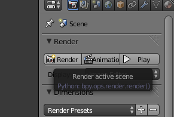
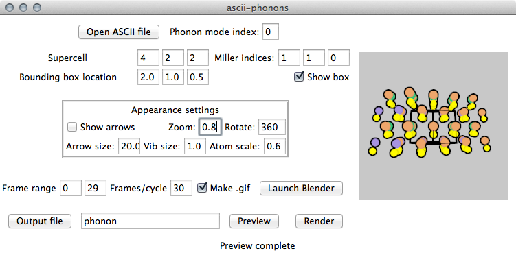

Ascii-phonons
Adam J. Jackson
a.j.jackson@bath.ac.uk
0.1 Info
Code site: https://github.com/ajjackson/ascii-phonons
These slides: http://ajjackson.github.io/ascii-phonons-slides
1 Introduction
1.1 What is ascii-phonons?
- A code to provide publication-quality visualisations of phonon modes
- Started life as a few scripts
- Aiming to make nice rendered images available to ab initio lattice dynamics community
1.2 Key features
- Static images

Figure 1: Modes are represented by arrows
- Off-gamma modes

Figure 2: Mode 13 in SnS at T-point (local minimum in dispersion plot)
- Crystallographer-friendly graphical user interface (GUI)
- Hacker-friendly command-line interface (CLI) [blend_ascii.py] and Python module [ascii_phonons]
- Blender-artist-friendly Blender Python module [vsim2blender]
2 Components
2.1 Overview
2.2 v_sim .ascii file
- v_sim is a program for interactive visualisation of phonon modes
- Very nice feature set for exploring these
- No output rendering options
- Simple, well-defined file format
- A bit buggy especially with USB monitor adapters, in virtual machines etc.
- This is likely related to its extensive use of OpenGL. VESTA has similar issues.
2.3 Blender
- Blender is the leading open-source package for 3D modelling and animation
- Codebase inherited from a commercial project, now run by a non-profit
- Regular open-source film projects help drive development forwards

Figure 4: Screenshot from the Sintel open film project
- Blender has a scripting interface which uses a full-blown Python 3 engine, distributed with Blender
- The hooks are discoverable as tooltips within the desktop interface

Figure 5: Blender tooltip (cursor is hidden from screenshot)
2.4 Python interface
- Building Blender as a module and calling it from your own programs is hard
- Instead, ascii-phonons generates throwaway script files with the user requirements and passes them to Blender
- The most "Blenderish" solution is to make a nice control panel within Blender
- But Blender has a steep learning curve, creating an unnecessary barrier to use
2.5 Graphical user interface
- The ascii-phonons GUI uses standard Python modules
- Tkinter "look" is platform-dependent and a bit dated
- Preview window uses PIL
- All core functionality is available, the GUI is not "dumbed down"

Figure 6: ascii-phonons GUI
2.6 Proposed workflow
- One-off images and prototypes using GUI
- For sophisticated graphics, use GUI to build model and launch Blender to work on materials, realistic lighting etc.
- For batches, use GUI to explore settings, then script CLI
- For in-house consistency or journal themes, use config files to customise colours
3 Details
3.1 .ascii import
Lattice vectors
- v_sim uses six distances in a 2x3 array (diagram)
dxx dyx dyy dzx dzy dzz
- These are converted to the usual 3x3 array by aligning \(a\) with the \(x\) axis and \(b\) with the \(x -- y\) plane
dxx 0. 0. dxy dyy 0. dzx dzy dzz
Eigenvectors and frequencies are given with corresponding q-points. This is expressed as commented metadata for backwards compatibility
- Eigenvectors are complex 3-tuples, divided into real and imaginary 3-tuples
#metaData: qpt=[0.000000;0.500000;0.000000;129.279993 \ #; 0.028286; -0.008664; -0.031412; -0.000000; -0.000000; 0.000000 \ #; 0.000010; -0.000003; -0.000011; 0.028285; -0.008664; -0.031409 \ #; -0.000003; 0.000001; -0.000003; -0.028288; 0.008663; -0.031407 \ #; -0.028289; 0.008663; -0.031408; 0.000007; -0.000002; 0.000008 \
- The complex component leads to a phase difference between neigbouring unit cells
3.2 Animated atom trajectories
- Mathematics is adapted from Martin Dove's Introduction to Lattice Dynamics
\[ \mathbf{r^\prime}(jl,t,\nu) = \\ \mathbf{r}(jl) + \mathbf{U}(j,\mathbf{q},\nu) \exp(i[\mathbf{q r}(jl) - \omega (\mathbf{k},\nu) t]) \]
- Need to track both atom index \(j\) and cell within supercell \(l\).
- Implementation very simple using complex datatypes:
for frame in range(start_frame, end_frame+1):
bpy.context.scene.frame_set(frame)
exponent = cmath.exp( complex(0,1) *
(r.dot(qpt) - 2 * math.pi*frame/n_frames))
atom.location = r + mass**-.5 * magnitude *
Vector([x.real for x in
[x * exponent for x in displacement_vector]])
atom.keyframe_insert(data_path="location",index=-1)
3.3 Arrows
Arrow model imported from a file
bpy.ops.wm.link(directory=os.path.dirname(__file__) + '/arrow_cylinder.blend/Object/', filepath="arrow_cylinder.blend", filename="Arrow")- Blender prefers to specify rotation in Euler notation:
- rotation about \(x\), followed by \(y\), followed by \(z\)
- Getting this right is harder than it looks!
- atan2 function is the key
- Deals with correct intepretation of sign changes
3.4 Miller index view
- This was a lot easier than expected!
Ignore what you learned in undergrad and read Ashcroft/Mermin
The Miller indices of a lattice plane are the coordinates of the shortest reciprocal lattice vector normal to that plane, with respect to a specified set of primitive reciprocal lattice vectors
- Use the Miller index to make a vector orthogonal to the plane
camera_direction_vector = sum([i * x for i, x in
zip(miller, reciprocal(lattice_vectors))],
Vector((0,0,0)))
- I tried to use a bit of geometry to estimate the required distance and re-scale the vector
- In practice a fudge factor is still useful.
- Blender has tools to point the camera at an interesting object; these are used to focus on the centre of the lattice.
3.5 GUI development
Tkinter provides three layout options
- Grid
- Divide window into a grid and place elements in each
- Generally recommended, start with a pencil and paper!
- Pack
- Used for ascii-phonons
- Elements are "packed" into a side of the frame
- Nested frames are used for complex layouts
- Good for resizable windows
- A bit easier to hack around when prototyping
- Place
- Specify exact positions
- Avoid!
Object-oriented programming is the way to go
- Parameters and settings need to be accessible by lots of functions
- Either assign to global variables or make attributes of parent object
- Global variables are evil
- Need to set up event loop
- Tkinter "widgets" work with special variable types
def add_appearance_row(self, padding=20):
...
self.camera_rot = tk.DoubleVar(value=360)
...
Appearance = tk.Frame(self.LeftFrame, borderwidth=3, relief="groove")
tk.Label(Appearance, text="Appearance settings").pack(side="top", fill="x")
AppearanceRow1 = tk.Frame(Appearance)
tk.Entry(AppearanceRow1,
textvariable=self.camera_rot, width=4
).pack(side="right")
...
4 Documentation with Sphinx
4.1 Sphinx — the good
- Developed for Python language docs
- Can handle multiple human and computer languages
- Generates API documentation from Python docstrings
- Build the document structure you want
- Nice templates, customisation also possible
- Export to HTML, PDF, Epub
- Popular → Familiar → Easier to browse under stress
- https://readthedocs.org/ will host your documentation online for free
- Provide an attractive, consistent experience
- Relies on sponsorship; currently their hosting is donated by Rackspace
4.2 Sphinx — the bad
- Languages other than Python are an afterthought
- Not as automatic as one would hope
- In practice you need to create a page for each submodule manually
- Format for doc pages is Restructured Text (ReST)
- Can export to this from other formats using Pandoc
- A bridge for Markdown, recommonmark, also exists
- RTD supports it
- Not all features are available, e.g. TOCs
4.3 Sphinx — the ugly
- API generation relies on docstrings written in ReST format
- As well as being unfamiliar, many people consider the readability to be poor
def init_material(symbol, col=False, shadeless=True):
"""
Create material if non-existent. Assign a random colour if none is specified.
:param col: RGB color. If False, use a random colour.
:type col: 3-tuple, list or Boolean False
:param shadeless: Enable set_shadeless material parameter. Informally known as "lights out".
:type shadeless: Boolean
:returns: bpy material object
"""
- Workarounds
- Keep your beautiful sphinx docs open and use them instead of the docstrings
- Use the Google or Numpy style with Napoleon
- I haven't tried this yet. Could be finnicky?
4.4 Sphinx — the verdict
Use it!
5 Quick closing observations
- I have given up on YAML
- Cumbersome for human editing
- Slow for large complex data
- If your data isn't large and complex, why use YAML?
- ascii-phonons uses configparser for .INI file-style configuration
- Packaging is awkward
- Automated tools exist, but they can't handle the weird double codebase of this project
- Project management with the issue tracker on Github is easy and seems like good practice
5.1 Want to know what's next?
Use the issue tracker to keep track of development, report bugs and make feature requests
5.2 How did I make this presentation?